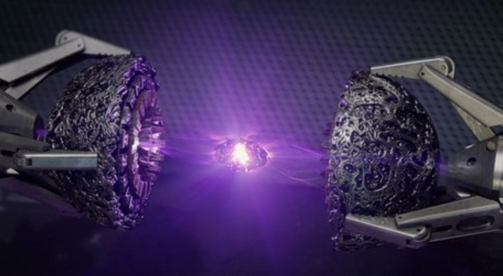

Камень силы
 Камни силы
— камень имеет доступ ко всей силе и энергии, когда-либо существовавшей
или существующей в будущем, питает другие камни и усиливает их эффекты. Камень позволяет владельцу
дублировать практически любую физическую сверхчеловеческую способность и становиться неуязвимым, а потому и
непобедимым, используя одну лишь сплошную силу.
Камни силы
— камень имеет доступ ко всей силе и энергии, когда-либо существовавшей
или существующей в будущем, питает другие камни и усиливает их эффекты. Камень позволяет владельцу
дублировать практически любую физическую сверхчеловеческую способность и становиться неуязвимым, а потому и
непобедимым, используя одну лишь сплошную силу.
Камни силы

появился в фильме «Стражи Галактики», где находился внутри Сферы. Стражи Галактики пытаются продать сферу
Коллекционеру, но дотронувшаяся до камня его служанка вызывает мощный выброс силы, который нанёс повреждения
хранилищу, и Стражи уходят, забрав камень. Ронан Обвинитель недолго использует камень до тех пор, пока
Стражам Галактики не удаётся обманом лишить его камня. После они передают камень на хранение Корпусу Нова. В
начале фильма «Мстители: Война бесконечности» показано, что Танос уже завладел Камнем силы, с помощью
которого он уничтожил корабль асгардийцев. Как именно Танос завладел камнем, показано не было, но Тор в
разговоре со Стражами Галактики упомянул про его нападение на Корпус Нова на Ксандаре. В фильме «Мстители:
Финал» Воитель, Небула, Чёрная вдова и Соколиный глаз отправляются на Мораг в 2014 год (события фильма
«Стражи Галактики») за Камнем силы и Камнем души. Воитель и Небула перехватывают Звёздного лорда и забирают
Сферу вместо него. Во время битвы войск Таноса с Мстителями, Танос использует камень против Капитана Марвел.
На Главную